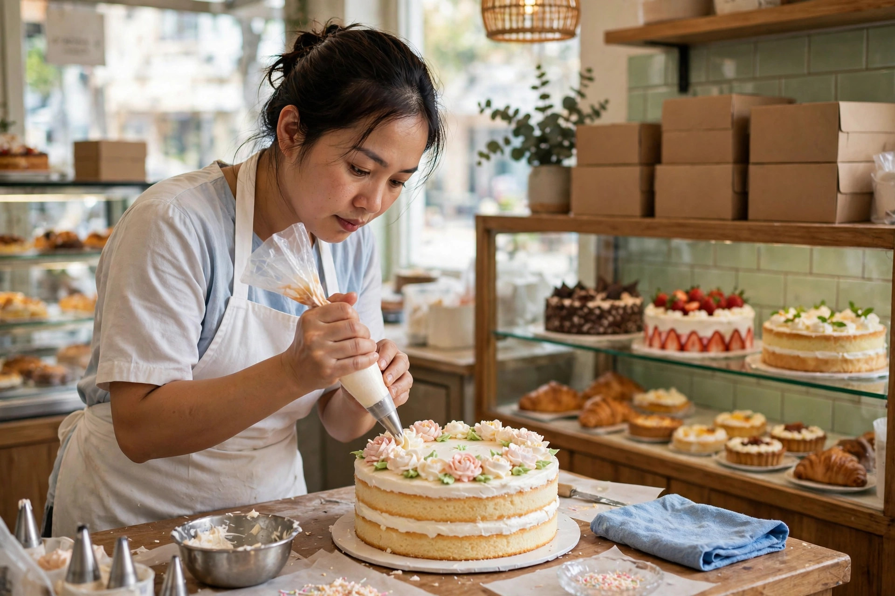

Website cho tiệm bánh cần có gì: đặt bánh theo mẫu, giao đúng giờ, khách đặt lại không cần gọi điện
Chủ tiệm bánh đang giới thiệu bánh sinh nhật cho khách — khoảnh khắc quen thuộc trong tiệm bánh, và là lý do website tiệm bánh phải cho khách tự chọn mẫu, chọn size và chọn giờ giao ngay lúc đặt.
Chiều thứ bảy, điện thoại bạn rung liên tục: "Shop ơi, bánh sinh nhật cho bé 5 tuổi mẫu nào đẹp ạ, size 20cm giá sao ạ, giao lúc 6 giờ chiều nay được không ạ?" Bạn đang dở tay nướng mẻ bánh cho đơn chiều, trả lời được một tin thì hai tin khác đã tới. Khách hỏi mẫu bánh thì bạn gửi ảnh, khách hỏi size thì bạn tra bảng giá, khách hỏi giờ giao thì bạn xem lịch giao — mỗi đơn là một cuộc trò chuyện dài, mà cuối cuộc trò chuyện đó, có khi khách đã sang tiệm khác đặt vì bên đó bấm vài lần là xong. Tiệm bánh của bạn không thiếu khách hỏi — chỉ thiếu một nơi để khách tự xem mẫu, tự chọn size, tự chọn giờ giao và đặt xong, không cần chờ bạn trả lời từng tin.
Chủ tiệm bánh nào cũng quen cảnh này — không phải vì khách không muốn mua, mà vì bánh là mặt hàng người ta đặt cho một giờ cụ thể: sinh nhật lúc 7 giờ tối, tiệc cưới lúc 10 giờ sáng, thôi nôi lúc 11 giờ trưa. Ngay dưới đây, mình sẽ cùng bạn bóc tách vì sao bán bánh qua Facebook/Zalo đang làm mất đơn, những mục một website cho tiệm bánh thực sự cần có, và cách bạn tự kiểm tra trước khi bỏ tiền làm web.
Vì sao tiệm bánh đông khách hỏi vẫn mất đơn: ba lỗi quen thuộc
Lỗi thứ nhất là ảnh bánh trên fanpage không nói được size, giá và giờ giao. Một chiếc bánh kem trong ảnh trông to hay nhỏ tùy góc chụp, khách nhìn ảnh không biết size 16cm hay 20cm, không biết giá bao nhiêu, không biết đặt lúc này thì giao lúc nào. Khách phải nhắn hỏi từng câu một: mẫu này size nào, giá sao, giao mấy giờ được — mà mỗi câu hỏi là một lần chờ, và khách đặt bánh sinh nhật thì đang vội, họ cần biết ngay chiếc bánh đó có vừa bàn tiệc nhà mình không, có kịp giờ cắt bánh không. Ảnh đẹp mà không kèm size, giá và giờ giao thì chỉ là ảnh để ngắm, không phải ảnh để bán.
Lỗi thứ hai là đặt bánh qua tin nhắn dễ sót giờ giao và nhầm mẫu. Một đơn bánh sinh nhật gồm nhiều chi tiết: mẫu nào, size nào, vị nào, viết chữ gì lên bánh, giao ngày nào, mấy giờ, giao tới đâu. Qua tin nhắn, các chi tiết này nằm rải rác trong cả chục tin nhắn qua lại, bạn đọc sót một dòng là bánh giao sai giờ, viết sai tên, làm sai vị — mà bánh sinh nhật sai một chi tiết là hỏng cả buổi tiệc, khách không quay lại lần sau. Chưa kể tin nhắn dồn vào giờ cao điểm: chiều thứ bảy, mấy khách cùng đặt bánh cho tối, bạn trả lời người này thì người kia đang chờ, tới lúc bạn nhắn lại "shop còn nhận đơn giao 6 giờ ạ" thì khách đã đặt chỗ khác.
Lỗi thứ ba là khách cũ muốn đặt lại mẫu lần trước thì phải mô tả lại từ đầu. Khách từng đặt một chiếc bánh sinh nhật socola size 20cm, viết chữ "Chúc mừng sinh nhật con", giao 6 giờ chiều — tháng sau sinh nhật đứa thứ hai, khách muốn đặt y hệt chiếc đó, chỉ khác tên và ngày giao. Nhưng qua tin nhắn, khách phải mô tả lại toàn bộ từ đầu, bạn phải lục lại tin nhắn cũ để tìm mẫu, rồi hỏi lại size, hỏi lại vị — một đơn đặt lại lẽ ra chỉ mất một phút lại thành một cuộc trò chuyện mười phút. Khách quen là khách dễ giữ nhất, nhưng cách bán qua tin nhắn lại bắt họ làm lại mọi thứ từ đầu mỗi lần đặt.
7 mục một website tiệm bánh thực sự cần có
Một website cho tiệm bánh không cần nhiều trang, cũng không cần hiệu ứng cầu kỳ. Nó cần đúng những mục dưới đây — mỗi mục giải quyết một câu hỏi cụ thể mà khách luôn hỏi trước khi bấm đặt hàng.
1. Đặt bánh theo mẫu — chọn dịp, chọn mẫu, chọn size, chọn vị, ghi chữ lên bánh
Khách đặt bánh hiếm khi vào web để "xem bánh chung chung" — họ vào vì một dịp cụ thể: sinh nhật con, thôi nôi, cưới hỏi, kỷ niệm ngày cưới, liên hoan công ty. Web phải cho họ chọn dịp trước rồi mới hiện mẫu: sinh nhật thì bánh kem trái cây, bánh socola, bánh hình thú cho bé; cưới hỏi thì bánh nhiều tầng, bánh trắng trang trí hoa; thôi nôi thì bánh nhỏ, màu nhẹ. Mỗi mẫu ghi rõ size 16cm, 20cm, 24cm kèm số người ăn vừa — size 16cm cho 6–8 người, size 20cm cho 10–12 người, size 24cm cho 15–20 người — vị bánh vani, socola, matcha, dâu, nhân kem gì, và ô ghi chữ muốn viết lên bánh: tên người nhận, lời chúc, ngày sinh nhật. Khách chọn một lượt là ra đúng chiếc bánh của dịp mình, không phải lướt qua cả trăm ảnh không liên quan.
2. Giá theo size ghi rõ, phụ phí trang trí tách riêng — khách tự tính được tổng tiền trước khi đặt
Mỗi mẫu bánh cần ghi rõ giá theo từng size ngay dưới ảnh: size 16cm giá bao nhiêu, size 20cm giá bao nhiêu, size 24cm giá bao nhiêu. Phụ phí trang trí ghi tách riêng: thêm hoa kem, thêm một tầng, thêm topper, thêm hộp quà — mỗi thứ cộng bao nhiêu, hiện rõ lúc khách chọn, để tổng tiền hiện ngay trước khi bấm đặt. Khách đặt bánh sinh nhật thường có ngân sách trong đầu, họ cần biết ngay chiếc bánh mình chọn có vừa ngân sách không, không phải nhắn hỏi giá rồi chờ bạn trả lời. Giá ghi rõ còn có một tác dụng khác: khách so sánh size này với size kia, thấy size lớn hơn chỉ thêm một khoản nhỏ mà đủ cho cả bàn tiệc, họ tự chọn size lớn — bạn không cần tư vấn thêm câu nào.
3. Chọn ngày và khung giờ giao ngay lúc đặt — bánh có sẵn giao trong 2 giờ, bánh đặt theo mẫu đặt trước 24 giờ
Khách chọn ngày giao và khung giờ giao ngay lúc đặt hàng: sáng 9–11 giờ, chiều 14–16 giờ, tối 18–20 giờ, kèm ô ghi rõ địa chỉ giao và số điện thoại người nhận. Ghi rõ bánh có sẵn trong tủ thì giao trong 2 giờ, bánh đặt theo mẫu cần đặt trước 24 giờ để tiệm kịp làm — đơn đặt sau mốc đó thì giao sang hôm sau, hiện rõ ngay lúc khách chọn giờ, không để khách đặt xong mới biết bánh không kịp giờ tiệc. Địa chỉ giao, tên người nhận, số điện thoại người nhận ghi ngay trong form đặt, để tiệm nhìn vào đơn là biết bánh nào cần làm trước, bánh nào giao tuyến nào. Mục này quan trọng nhất với bánh sinh nhật: bánh phải tới đúng giờ cắt bánh, giao sớm thì bánh để lâu, giao muộn thì tiệc đã bắt đầu.
4. Ghi chú dị ứng và khẩu vị — ít ngọt, không đậu phộng, không sữa, tiệm đọc trước khi làm
Bánh là đồ ăn, nên mỗi đơn cần một ô ghi chú để khách viết rõ yêu cầu riêng: ít ngọt, không đậu phộng, không sữa, không trứng, vị socola đắng hơn, hay người nhận dị ứng với một nguyên liệu nào đó. Tiệm đọc ghi chú này trước khi làm bánh, không phải hỏi lại khách sau khi đã nhận đơn. Với bánh cho trẻ nhỏ, ô ghi chú này rất quan trọng: bố mẹ cần biết bánh có thành phần nào con mình không ăn được không, và họ yên tâm hơn nhiều khi thấy web có sẵn chỗ để ghi điều đó, thay vì phải nhắn tin dặn dò rồi lo bạn đọc sót.
5. Giỏ hàng và đặt hàng COD — khách đặt xong trong một phút, nhận bánh mới trả tiền
Khách đặt bánh thường đặt trong những khoảng thời gian vụn vặt: lúc vừa nhớ ra sinh nhật con vào cuối tuần, lúc đang trên đường về sau giờ làm, lúc tan ca mới nhớ chưa đặt bánh cho tiệc công ty sáng mai. Quy trình đặt hàng vì vậy phải ngắn nhất có thể: chọn đúng mẫu còn làm được, chọn ngày và giờ giao, điền tên, số điện thoại và địa chỉ là xong — vài lần chạm, không cần tạo tài khoản, không cần chuyển khoản trước. Khách nhận bánh mới trả tiền (COD) đúng thói quen mua bán quen thuộc, không phải lăn tăn chuyển khoản cho một tiệm lạ vì một chiếc bánh. Form đặt hàng chỉ giữ những ô thật cần thiết: bỏ bớt những trường không cần thiết, để lại đúng những gì bạn cần để làm bánh đúng mẫu và giao bánh đúng giờ.
6. Ảnh thật và đánh giá của khách đã đặt — ghi rõ đặt bánh gì, giao có đúng giờ không, bánh có giống mẫu không
Với tiệm bánh, đánh giá có giá trị nhất không phải là "bánh ngon lắm ạ" mà là những dòng ghi rõ thông tin thật: đặt bánh gì cho dịp nào, giao có đúng giờ đã hẹn không, bánh giao tới có giống mẫu trên web không, chữ viết lên bánh có đúng tên không. Mục này cần ghi rõ mẫu bánh, giờ giao thực tế và cảm nhận về vị bánh — kèm được ảnh thật chiếc bánh khách đã nhận thì tốt hơn nữa, với sự đồng ý của khách. Năm đến bảy đánh giá như vậy, đặt ngay dưới mục đặt bánh theo mẫu, có tác dụng hơn cả một trang giới thiệu dài: khách đang phân vân không biết bánh giao tới có giống ảnh mẫu không sẽ đối chiếu dịp của mình với dịp trong đánh giá và tự tin bấm đặt, thay vì nhắn hỏi bạn rồi chờ trả lời.
7. Đặt lại trong một phút cho khách quen — bấm "đặt lại mẫu này", chỉ chọn lại ngày và giờ giao
Khách cũ từng đặt một mẫu bánh thì lần sau chỉ cần bấm "đặt lại mẫu này": mẫu, size, vị và chữ viết trên bánh đã lưu sẵn, khách chỉ chọn lại ngày giao và khung giờ giao, sửa tên người nhận nếu cần, rồi bấm đặt — xong trong một phút, không cần gọi điện, không cần mô tả lại mẫu từ đầu. Mục này giữ khách quen hiệu quả nhất trong cả bảy mục: sinh nhật mỗi năm một lần, thôi nôi, kỷ niệm ngày cưới, tiệc công ty theo quý — khách quay lại đều đặn, mà mỗi lần quay lại họ đều thấy việc đặt bánh dễ hơn lần trước. Tiệm nào làm khách quen đặt lại dễ thì khách quen ở lại, không cần quảng cáo thêm.
👉 Xem thư viện mẫu web theo ngành nghề tại Web Khởi Nguồn
Thợ làm bánh đang bắt hoa kem lên bánh sinh nhật đặt theo mẫu — chiếc bánh khách chọn trên web sẽ được làm đúng mẫu, đúng size và giao đúng giờ đã hẹn.
Khách đặt bánh sinh nhật gấp và khách đặt bánh định kỳ dùng website theo hai cách hoàn toàn khác nhau
Khách đặt bánh sinh nhật gấp — người vừa nhớ ra sinh nhật con vào cuối tuần, hay cần một chiếc bánh giao trước giờ tiệc tối nay — vào web của bạn với mục đích rất thực dụng: xem mẫu bánh nào còn làm kịp, chọn size, chọn giờ giao gần nhất, đặt xong trong một phút rồi tắt đi. Với nhóm này, mẫu bánh có sẵn, giờ giao, giá theo size và giỏ hàng đặt nhanh là quan trọng nhất; họ quyết trong vài giây bằng cảm xúc, thấy bánh giống mẫu, giao kịp giờ là bấm đặt, không cần đọc dài, không cần tư vấn nhiều. Nhóm này cũng là nhóm quay lại thường xuyên nhất — mỗi lần nhà có sinh nhật là một lần họ mở lại web của bạn.
Khách đặt bánh định kỳ — quán cà phê đặt bánh ngọt mỗi tuần, công ty đặt bánh sinh nhật nhân viên hàng tháng, gia đình đặt bánh vào mỗi dịp lễ — lại vào web với tâm thế dò xét. Họ đọc kỹ mẫu bánh, so sánh size và giá, xem bánh giao tới có giống mẫu không và đọc đánh giá của người từng đặt cho dịp giống mình trước khi quyết định. Với nhóm này, đặt bánh theo mẫu, giá theo size, ghi chú dị ứng và đánh giá ghi rõ mẫu bánh và giờ giao là bốn thứ quan trọng nhất; thiếu một trong bốn, họ sẽ sang tiệm khác. Hiểu hai hành vi này, bạn sẽ biết vì sao website tiệm bánh phải vừa có đủ mẫu bánh có sẵn, giờ giao và đặt nhanh cho khách đặt gấp, vừa có giá theo size, ghi chú dị ứng và đánh giá rõ ràng cho khách đặt định kỳ — thiếu một phía là mất một nửa cơ hội.
Gói website trọn gói 586.000đ tại Web Khởi Nguồn gồm những gì cho tiệm bánh?
Nghe giá 586.000đ, nhiều chủ tiệm nghi ngờ ngay: rẻ vậy thì web làm ra chắc chỉ để "cho có", được vài hôm lại lỗi. Nghi ngờ đó có cơ sở nếu giá rẻ đến từ việc cắt xén tính năng. Còn ở đây, giá thấp đến từ cách làm: tiệm nhỏ chỉ cần một website bán hàng đúng nhu cầu, cấu trúc trang cho cửa hàng bán bánh đã được đóng gói thành quy trình chuẩn, đội ngũ không phải ngồi lập trình lại từ con số không cho từng khách, nên chi phí dồn vào đúng phần nội dung và giao diện riêng của tiệm bạn. Bạn có thể xem chi tiết tại bảng giá và mục gói 586.000đ gồm những gì trên trang chủ.
Cụ thể với một tiệm bánh, gói làm web bán hàng 586.000đ (giá gốc 2.000.000đ) bàn giao gồm: website theo đúng ngành bánh, với trang giới thiệu tiệm, trang sản phẩm xếp bánh theo dịp và theo mẫu, giá theo size, ngày và khung giờ giao, trang liên hệ; giỏ hàng và đặt hàng COD để khách đặt xong trong vài lần chạm, nhận bánh mới trả tiền; cụm nút gọi — Zalo — bản đồ nổi một chạm để khách hỏi nhanh "mẫu này còn làm kịp giờ tiệc không" và tìm đường tới tiệm. Web dựng xong trong 1–3 ngày, bảo hành kỹ thuật trọn đời. Chính sách làm thử trước, hài lòng mới thanh toán, không cần đặt cọc — bạn xem trước bản dựng của chính tiệm mình rồi mới quyết định. Khi tiệm mở thêm chi nhánh hay cần bán hàng bài bản hơn, bạn có thể nâng cấp lên gói website cao cấp mà không phải làm lại từ đầu.
Cách tự kiểm tra một website tiệm bánh trước khi quyết định làm
Dù bạn làm web ở đâu, hãy tự kiểm tra bằng trải nghiệm của chính khách hàng, với bốn bước đơn giản sau. Bước một: lấy điện thoại của bạn, bật 4G, đóng vai một khách cần một chiếc bánh sinh nhật giao tối nay. Đếm số lần chạm từ lúc trang mở tới lúc bạn đặt xong đơn — nếu phải qua quá 4 đến 5 lần chạm, hoặc phải nhắn tin hỏi giá, hỏi size và hỏi giờ giao thì mới mua được, trang đó đang làm mất đơn mỗi ngày. Bước hai: thử chọn một mẫu bánh theo dịp, xem giá theo size, số người ăn vừa và ô ghi chữ lên bánh có hiện rõ không; thử đặt một mẫu bánh cần đặt trước 24 giờ vào giờ giao tối nay, xem web có báo lại và gợi ý mẫu bánh có sẵn giao trong 2 giờ không. Bước ba: thử đặt một chiếc bánh giao trong ngày, xem form có ô ngày giao, ô khung giờ giao, ô ghi chú dị ứng, tên người nhận không; gửi thử một đơn hàng qua giỏ hàng COD, xem thông tin có tới tay bạn đầy đủ tên, số điện thoại, địa chỉ, mẫu bánh, size và giờ giao khách đã chọn không. Bước bốn: bấm thử nút gọi và nút Zalo ngay trên trang, xem có ra đúng số của tiệm không; mở lại trang bằng 4G vào đúng giờ cao điểm tối, xem trang và ảnh bánh có hiện nhanh không — khách của bạn cũng đang mở trang trong đúng điều kiện như vậy, thường là lúc họ vừa nhớ ra sinh nhật người thân vào cuối tuần và cần đặt bánh gấp.
Quay lại cảnh chiều thứ bảy ở đầu bài: bạn không thể làm khách hết vội ngay, nhưng bạn có thể khiến một người đang lo cho sinh nhật của con tự xem được mẫu bánh nào còn làm kịp, chọn được size vừa bàn tiệc, chọn được giờ giao và đặt xong trong một phút, không cần chờ ai trả lời tin nhắn. Mẫu bánh đúng dịp, giá theo size rõ ràng, giờ giao đúng hẹn và nhận bánh mới trả tiền — lúc đó tin nhắn còn lại chỉ là "shop ơi bánh đẹp lắm, tháng sau sinh nhật bé thứ hai em lại đặt nhé", đúng kiểu tin nhắn mà chủ tiệm bánh nào cũng muốn nhận. Nếu bạn đang cân nhắc làm website cho tiệm của mình, cứ xem trước các mẫu theo ngành nghề, đối chiếu với bảy mục trong bài này, rồi quyết định cũng chưa muộn.
Muốn shop của bạn có website như vậy?
Xem trước các mẫu demo theo ngành nghề, ưng mẫu nào làm mẫu đó — trọn gói 586.000đ, xem mẫu trước khi quyết định.